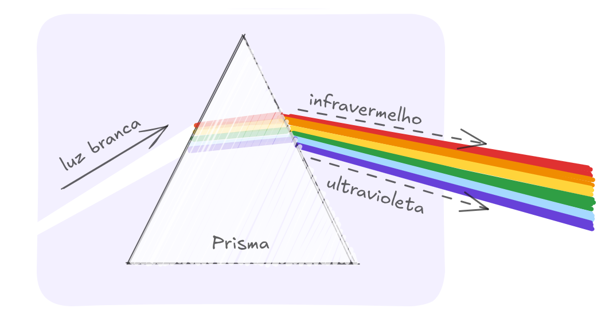
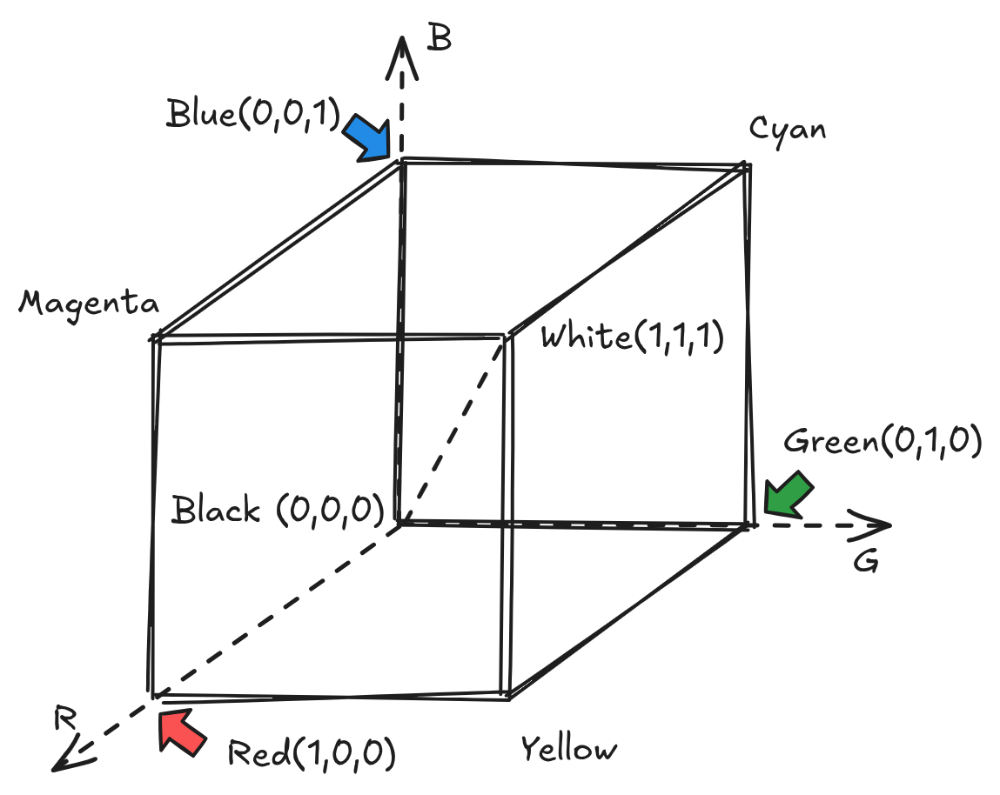
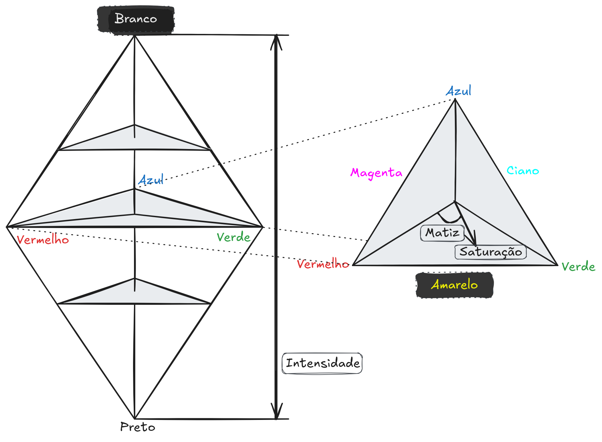

6 Imagens Coloridas

A maioria das informações visuais percebidas pelo ser humano envolve cor. Em Processamento Digital de Imagens, o uso da cor amplia significativamente a capacidade de análise, interpretação e representação de cenas, tornando sistemas computacionais mais próximos da percepção humana.
Este capítulo apresenta os fundamentos das imagens coloridas, abordando os princípios da percepção da cor, os principais modelos de cor utilizados em sistemas computacionais e as formas de representação e manipulação de imagens coloridas.
6.1 Percepção da Cor
A percepção de cores é resultado de um processo fisiológico e psicológico realizado pelo sistema visual humano. A luz refletida pelos objetos é captada pelos olhos e convertida em sinais elétricos pelos fotorreceptores presentes na retina. Esses sinais são então transmitidos ao cérebro, que os interpreta e produz a sensação de cor. Entretanto, o mecanismo completo pelo qual o cérebro processa e interpreta essas informações ainda não é totalmente compreendido. Por esse motivo, a percepção de cor é frequentemente descrita como um fenômeno fisiopsicológico, pois envolve tanto mecanismos físicos de detecção da luz quanto processos cognitivos de interpretação.
Um passo fundamental para a compreensão da natureza da luz e das cores foi dado em 1666 por Isaac Newton. Em seus experimentos, Newton demonstrou que a luz branca não é uma entidade simples, mas sim uma combinação de diferentes componentes de luz. Ao fazer um feixe de luz branca atravessar um prisma de vidro, observou-se que a luz emergente se separa em várias cores distintas. Esse fenômeno ocorre porque cada componente da luz possui comprimentos de onda diferentes, que são desviados de maneira distinta ao atravessar o prisma.

O conjunto de cores resultante desse experimento é denominado espectro visível da luz. Ele corresponde à faixa do espectro eletromagnético que pode ser percebida pelo olho humano e costuma ser representado como uma sequência contínua de cores que se estende do violeta ao vermelho.
Para fins didáticos, esse espectro costuma ser dividido em seis regiões principais: violeta, azul, verde, amarelo, laranja e vermelho. No entanto, essas regiões não apresentam limites abruptos. Na realidade, as cores variam de forma contínua ao longo do espectro, de modo que uma tonalidade se transforma gradualmente na seguinte. Assim, entre duas cores adjacentes existem inúmeras tonalidades intermediárias que não podem ser classificadas de maneira absoluta como pertencentes a apenas uma região específica.
Fisicamente, cada cor do espectro está associada a um intervalo de comprimentos de onda da luz visível. De maneira aproximada, o violeta corresponde à faixa entre 380 e 450 nm, o azul entre 450 e 495 nm, o verde entre 495 e 570 nm, o amarelo entre 570 e 590 nm, o laranja entre 590 e 620 nm e o vermelho entre 620 e 750 nm. Essa relação entre comprimento de onda e cor percebida é fundamental em diversas áreas, como fotografia, computação gráfica e processamento de imagens, pois permite modelar matematicamente a formação e a reprodução das cores em diferentes dispositivos.
6.2 Conceitos Básicos de Cor
A descrição e o estudo das cores podem ser realizados a partir de atributos perceptuais, isto é, características que correspondem à forma como o sistema visual humano percebe as cores. Esses atributos permitem representar e diferenciar cores de maneira mais intuitiva, aproximando a descrição matemática da experiência visual humana. De modo geral, uma cor pode ser caracterizada por três propriedades fundamentais: matiz, saturação e brilho.
A matiz (hue) corresponde à tonalidade dominante da cor, sendo a característica que permite distinguir uma cor de outra no espectro visível. Em termos práticos, a matiz identifica se uma cor é percebida como vermelha, azul, verde, amarela, entre outras. Esse atributo está relacionado principalmente ao comprimento de onda predominante da luz que atinge o olho humano.
A saturação indica o grau de pureza ou intensidade da cor. Cores altamente saturadas apresentam tonalidades vivas e intensas, enquanto cores com baixa saturação tendem a parecer mais esmaecidas ou próximas de tons de cinza. Em outras palavras, a saturação expressa o quanto uma cor está misturada com luz branca ou com outras cores, afetando a vivacidade da tonalidade percebida.
O brilho, também denominado intensidade ou luminosidade, representa a quantidade de luz associada à cor. Esse atributo está relacionado à percepção de quão clara ou escura uma cor é. Cores com maior brilho são percebidas como mais claras, enquanto cores com menor brilho aparecem mais escuras.
Esses três atributos perceptuais são amplamente utilizados na definição de modelos de cor, que são representações matemáticas destinadas a descrever e manipular cores em sistemas computacionais. Modelos como HSV (Hue, Saturation, Value) e HSL (Hue, Saturation, Lightness) organizam as cores justamente com base nesses parâmetros perceptuais, facilitando tarefas como edição de imagens, segmentação de cores e desenvolvimento de algoritmos de processamento de imagens digitais.
6.3 Modelo de Cor RGB
O modelo RGB representa as cores a partir da combinação de três componentes espectrais primárias: vermelho (red), verde (green) e azul (blue). Cada cor é definida por um triplo de valores que indicam a intensidade de cada uma dessas componentes. Esse modelo pode ser interpretado geometricamente como um sistema de coordenadas cartesianas tridimensional, no qual cada eixo corresponde a uma das cores primárias.

No cubo RGB, o ponto de origem (0,0,0) representa a ausência total de luz, ou seja, a cor preta (black). À medida que os valores das componentes aumentam, a cor resultante torna-se mais clara. No extremo oposto do cubo, o ponto (1,1,1) representa a presença máxima das três componentes, resultando na cor branca (white).
Os vértices localizados sobre os eixos correspondem às cores primárias: azul em (0,0,1), verde em (0,1,0) e vermelho em (1,0,0). Esses pontos indicam que apenas uma das componentes está presente com intensidade máxima, enquanto as demais são nulas.
As demais cores são obtidas pela combinação dessas componentes. Por exemplo, o ponto (0,1,1), localizado no plano formado pelos eixos verde e azul, representa a cor ciano (cyan), que resulta da mistura dessas duas cores primárias. De forma análoga, o ponto (1,0,1) corresponde ao magenta (magenta), e o ponto (1,1,0) ao amarelo (yellow).
Assim, o cubo RGB fornece uma representação intuitiva e geométrica do espaço de cores, permitindo visualizar como diferentes combinações das componentes primárias geram todas as demais cores perceptíveis nesse modelo.
6.4 Modelo de Cor CMY e CMYK
O modelo CMY é um modelo de cores baseado nas componentes ciano (cyan), magenta (magenta) e amarelo (yellow), sendo amplamente utilizado em processos de impressão. Diferentemente do modelo RGB, que é aditivo (baseado na emissão de luz), o modelo CMY é subtrativo, pois descreve como as cores são formadas pela absorção de luz refletida por uma superfície.
Nesse modelo, parte-se da cor branca, que representa a reflexão total da luz (equivalente ao papel em branco). À medida que as tintas são aplicadas, certas componentes da luz são absorvidas (subtraídas), modificando a cor percebida. Cada uma das cores primárias do modelo CMY atua removendo uma componente do modelo RGB: o ciano absorve o vermelho, o magenta absorve o verde e o amarelo absorve o azul.
As cores no modelo CMY também podem ser representadas em um sistema de coordenadas tridimensional, semelhante ao cubo RGB. O ponto (0,0,0) corresponde ao branco (ausência de tinta), enquanto o ponto (1,1,1) representa a combinação máxima das três tintas, que idealmente resultaria em preto. No entanto, devido a imperfeições dos pigmentos, essa combinação geralmente produz um tom escuro acinzentado, motivo pelo qual, na prática, utiliza-se o modelo estendido CMYK, com a adição da tinta preta (black).
A conversão entre RGB e CMY pode ser expressa de forma simples, considerando valores normalizados:
\[ C = 1 - R, \quad M = 1 - G, \quad Y = 1 - B \]
As combinações entre as componentes CMY geram outras cores. Por exemplo, a mistura de ciano e magenta produz azul, a mistura de ciano e amarelo resulta em verde, e a combinação de magenta e amarelo gera vermelho. Essas relações evidenciam que o modelo CMY é, na prática, o complementar do modelo RGB.
O canal adicional K no modelo CMYK é utilizado para melhorar o contraste e reduzir o consumo de tinta.
6.5 Modelo de Cor HSV
O modelo HSV (Hue, Saturation, Value) é uma representação de cores que busca se aproximar da forma como os seres humanos percebem e descrevem as cores. Assim como o modelo HSI, ele separa a informação cromática da informação de brilho, facilitando tarefas de análise e processamento de imagens.
No modelo HSV, as cores são representadas em uma geometria conhecida como hexcone (ou cone hexagonal). Nessa representação, o eixo vertical corresponde ao valor (V), que indica o brilho da cor. O valor varia de 0 (preto) até 1 (máximo brilho). Diferentemente do modelo HSI, o topo do modelo HSV não corresponde ao branco puro necessariamente, mas à cor mais intensa possível para uma determinada matiz.
A matiz (H – hue) representa o tipo da cor e é dada por um ângulo ao redor do eixo vertical. Esse ângulo varia de 0° a 360°, sendo que diferentes intervalos correspondem a cores perceptuais distintas: 0° representa o vermelho, 120° o verde e 240° o azul. As demais cores são obtidas por valores intermediários desse ângulo.
A saturação (S) indica o quão “pura” ou “intensa” é a cor. No modelo HSV, a saturação mede a proximidade da cor em relação ao eixo central do cone. Quando (S = 0), a cor está no eixo e corresponde a um tom de cinza (sem cor definida). Quando (S = 1), a cor está na superfície externa do cone, apresentando máxima pureza.
No exemplo interativo em sequência está um cone que representa as matiz, saturação e o valor no modelo de cores HSV. Arraste o cone com o mouse para uma visualização tridimensional do cone:
6.5.1 Interpretação geométrica
- O eixo vertical (V) vai do preto até as cores mais brilhantes.
- A saturação (S) é a distância radial em relação ao eixo central.
- A matiz (H) é o ângulo ao redor do eixo, determinando a cor.
Dessa forma, o modelo HSV pode ser visualizado como um conjunto de “discos” empilhados: cada disco corresponde a um valor de brilho, e dentro de cada disco as cores variam em matiz e saturação.
6.5.2 Conversão de RGB para HSV
Com os valores dos componentes de cor R, G e B, definidas no intervalo entre 0 e 1, o modelo HSV pode ser calculado através das seguintes equações:
\[ H = \left\{ \begin{array}{cl} 0 & \text{se } MAX = MIN \\ 60 \times \frac{G-B}{MAX-MIN} + 0 & \text{se } MAX = R \text{ e } G \geq B \\ 60 \times \frac{G-B}{MAX-MIN} + 360 & \text{se } MAX = R \text{ e } G < B \\ 60 \times \frac{B-R}{MAX-MIN} + 120 & \text{se } MAX = G \\ 60 \times \frac{R-G}{MAX-MIN} + 240 & \text{se } MAX = B \\ \end{array} \right. \]
\[ S = \left\{ \begin{array}{cl} 0 & \text{se } MAX = 0 \\ \frac{MAX- MIN}{MAX} & \text{caso contrário} \end{array} \right. \]
\[ V = MAX \]
No exemplo interativo em sequência está uma representação usando o círculo de cores e o triângulo que liga branco, o preto e todas as matizes da cor escolhida no modelo HSI. Clique no círculo de cores para selecionar a matiz. No triângulo correspondente estão representados o vértice da matiz selecionada, o vértice da cor branca e o vértice cor preta. O triângulo é pintado com as variações de saturação e intensidade da matiz selecionada:
6.6 Modelo de Cor HSI
O modelo HSI (Hue, Saturation, Intensity) descreve as cores de uma forma mais próxima da percepção humana, separando a informação de cor (matiz e saturação) da informação de brilho (intensidade). Essa separação é especialmente útil em processamento de imagens, pois permite manipular iluminação e cor de forma independente.
No modelo HSI, a intensidade (I) representa o brilho da cor e é definida ao longo de um eixo vertical que vai do preto (0,0,0) ao branco (1,1,1). Esse eixo corresponde à linha onde as três componentes RGB possuem o mesmo valor, ou seja, tons de cinza. Quanto maior o valor de intensidade, mais clara é a cor.
A saturação (S) indica o grau de pureza da cor. Geometricamente, ela corresponde à distância entre a cor e o eixo de intensidade. Cores localizadas exatamente sobre esse eixo possuem saturação zero (tons de cinza), enquanto cores mais afastadas do eixo são mais saturadas, ou seja, mais “vivas”.
A matiz (H – hue) representa o tipo da cor (vermelho, verde, azul, etc.). Ela é determinada pelo ângulo no plano perpendicular ao eixo de intensidade. Esse plano pode ser entendido como um triângulo formado pela interseção do cubo RGB com um plano de intensidade constante. Por exemplo, no plano que passa pela cor ciano, os vértices do triângulo ajudam a definir a matiz das cores presentes naquele nível de intensidade.

6.6.1 Conversão de RGB para HSI
Considere uma cor no modelo RGB com componentes normalizadas no intervalo \([0,1]\), ou seja, \(R\), \(G\) e \(B\).
\[ H = \left\{ \begin{array}{ll} \theta & se \quad B \leq G \\ 360 - \theta & se \quad B > G \end{array} \right. \]
onde: \[ \theta = \cos^{-1}\left\{\frac{\frac{1}{2}[(R-G) + (R-B)]}{\sqrt{(R-G)^2 + (R-B)(G-B)}}\right\} \]
\[ S = 1 - \frac{3}{(R + G + B)}[\min (R,G,B)] \] \[ I = \frac{1}{3}(R + G + B) \]
No exemplo interativo em sequência estão implementados todas as conversões RGB para HSI e para HSV:
6.7 Representação de Imagens Coloridas
Imagens coloridas podem ser representadas de diferentes formas, dependendo do modelo de cor adotado. Em geral, uma imagem colorida pode ser vista como um conjunto de imagens monocromáticas correlacionadas.
Essa representação permite que técnicas clássicas de processamento em tons de cinza sejam aplicadas individualmente aos canais de cor ou a componentes específicas do modelo adotado.
6.8 Aplicações de Imagens Coloridas
O uso de imagens coloridas é essencial em diversas aplicações, tais como:
- segmentação baseada em cor;
- reconhecimento de objetos;
- análise de cenas naturais;
- visão computacional em robótica;
- processamento de imagens médicas e industriais.
A escolha adequada do modelo de cor é determinante para o sucesso dessas aplicações.
6.9 Considerações Finais
As imagens coloridas desempenham um papel central no Processamento Digital de Imagens moderno. A compreensão dos modelos de cor e de suas características é fundamental para o desenvolvimento de sistemas eficientes e robustos.
O domínio desses conceitos permite selecionar representações adequadas e explorar de forma eficaz as informações cromáticas presentes nas imagens, ampliando as possibilidades de análise e interpretação.